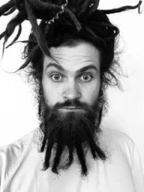

Артем Барышев из Санкт-Петербурга
«Без стен»
Местоположение: Индия
Снято на iPhone 6
– Я сделал этот снимок в январе 2020 года, когда путешествовал по Индии еще до закрытия границ. Мы ехали на поезде из Бангалора в Тируваннамалай, и это снимок я сделал прямо из окна поезда. Мне нравится снимать линии, получается очень графично. Я использую в iPhone серийную съемку, где в этом случае один из 20 кадров получился просто Wow, я сразу увидел что он лучший и я хочу с ним участвовать в конкурсе. Цветокоррекция минимальная, добавил синего, чтобы стена сливалась с небом.
– Я снимаю на iPhone 6 – это моя любимая камера, которая всегда с собой. Ведь снимок – это случай, а камера – это инструмент, и не так важно, на зеркалку ты снимаешь или на смартфон. Этим мне хочется показать, что камера, которая всегда с собой, может дать тебе высокий уровень в фотографии. Из других смартфонов я пробовал камеру в Pixel, но не понял прикола – это совсем другая картинка, нет той ламповости, которую дает iPhone.
– Два года назад я решил больше не публиковать снимки в Instagram, а начал их печатать и раздавать людям, которые со мной лично делились эмоциями. Я перестал выкладывать снимки за лайки. Мне кажется, что люди стали воспринимать свою жизнь через призму соцсетей – многие ценят лайк, а не то что за снимком скрыто. Мне это не очень близко. Возможно, именно это сыграло ключевую роль в победе на 2020 iPhone Photography Awards, поскольку одно из правил конкурса – номинированный снимок не должен быть опубликован в соцсетях.
Артём Барышев родился в Витебске (Беларусь), живет в Санкт- Петербурге. В 2014 году совершил кругосветное путешествие. По образованию архитектор, создаёт дизайнерские вещи, элементы домашнего декора.